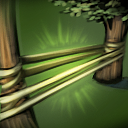
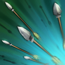

Crystal Maiden

18

16

16
Able to keep her allies supplied with mana as she slows down enemies to ensure a kill, Crystal Maiden is a helpful addition to any team.
Born in a temperate realm, raised with her fiery older sister Lina, Rylai the Crystal Maiden soon found that her innate elemental affinity to ice created trouble for all those around her. Wellsprings and mountain rivers froze in moments if she stopped to rest nearby; ripening crops were bitten by frost, and fruiting orchards turned to mazes of ice and came crashing down, spoiled. When their exasperated parents packed Lina off to the equator, Rylai found herself banished to the cold northern realm of Icewrack, where she was taken in by an Ice Wizard who had carved himself a hermitage at the crown of the Blueheart Glacier. After long study, the wizard pronounced her ready for solitary practice and left her to take his place, descending into the glacier to hibernate for a thousand years. Her mastery of the Frozen Arts has only deepened since that time, and now her skills are unmatched.


CRYSTAL NOVA
A burst of damaging frost slows enemy movement and attack rate in the targeted area.
FROSTBITE
Encases an enemy unit in ice, prohibiting movement and attack, while dealing damage over time. Lasts 10.0 seconds on creeps level 6 or lower.
ARCANE AURA
Gives additional mana regeneration to all friendly units on the map. This bonus is increased for Crystal Maiden.
FREEZING FIELD
Surrounds Crystal Maiden with 100 random icy explosions that slow enemies and deal massive damage. Grants bonus armor while channeling. Lasts 10.0 seconds.
Axe
25
20
18
One after another, Axe cuts down his foes. Slamming his culling blade through a weakened enemy, he is always charging onward.
As a grunt in the Army of Red Mist, Mogul Khan set his sights on the rank of Red Mist General. In battle after battle he proved his worth through gory deed. His rise through the ranks was helped by the fact that he never hesitated to decapitate a superior. Through the seven year Campaign of the Thousand Tarns, he distinguished himself in glorious carnage, his star of fame shining ever brighter, while the number of comrades in arms steadily dwindled. On the night of ultimate victory, Axe declared himself the new Red Mist General, and took on the ultimate title of 'Axe.' But his troops now numbered zero. Of course, many had died in battle, but a significant number had also fallen to Axe's blade. Needless to say, most soldiers now shun his leadership. But this matters not a whit to Axe, who knows that a one-man army is by far the best.


BERSERKER'S CALL
Axe taunts nearby enemy units, forcing them to attack him, while he gains bonus armor during the duration.
BATTLE HUNGER
Enrages an enemy unit, causing it to be slowed and take damage over time until it kills another unit or the duration ends. Axe gains movement speed for each unit affected with Battle Hunger, half speed from creeps.
COUNTER HELIX
When attacked, Axe has a chance to perform a helix counter attack, dealing pure damage to all nearby enemies.
CULLING BLADE
Axe spots a weakness and strikes, instantly killing an enemy unit with low health, or dealing moderate damage otherwise. When an enemy hero is killed with Culling Blade, its cooldown is reset, and Axe and nearby allied units gain bonus movement speed.
Windranger
18
17
18
Evasive and swift, the nimble Windranger is always seeking the right angle to attack.
The western forests guard their secrets well. One of these is Lyralei, master archer of the wood, and favored godchild of the wind. Known now as Windranger, Lyralei's family was killed in a storm on the night of her birth--their house blown down by the gale, contents scattered to the winds. Only the newborn survived among the debris field of death and destruction. In the quiet after the storm, the wind itself took notice of the lucky infant crying in the grass. The wind pitied the child and so lifted her into the sky and deposited her on a doorstep in a neighboring village. In the years that followed, the wind returned occasionally to the child's life, watching from a distance while she honed her skills. Now, after many years of training, Windranger fires her arrows true to their targets. She moves with blinding speed, as if hastened by a wind ever at her back. With a flurry of arrows, she slaughters her enemies, having become, nearly, a force of nature herself.
- 
-

- 
Shackle Shot
Shackles the target to an enemy unit or tree in a line directly behind it. If no unit or tree is present, the stun duration is reduced to 0.8.
Powershot
Windranger charges her bow for up to 1.0 second for a single powerful shot, which deals more damage the longer it is charged. The arrow damages enemies along its path. For each enemy that Powershot hits, its damage is reduced by 20%.
Windrun
Increases movement speed and adds evasion from all physical attacks, while slowing movement of nearby enemies.
Focus fire
Windranger channels the wind to gain 475 additional attack speed against a single enemy unit or structure, though with a reduction to her attack damage. Extra damage from secondary item effects is not reduced.
CLINKZ
16
22
18
When Clinkz stalks invisibly through the battlefield, none are safe. Swift of foot and arrow, he rains fiery death upon his foes.
At the base of the Bleeding Hills stretches a thousand-league wood, a place called The Hoven, where black pools gather the tarry blood of the uplands, and the king-mage Sutherex sits in benevolent rule. Once a sworn protector of the Hoven lands, Clinkz earned a reputation for his skill with a bow. In the three-hundredth year of the king-mage, the demon Maraxiform rose from sixth hell to lay claim to the forest. In response, the king-mage decreed an unbreakable spell: to any who slew the demon would be granted Life Without End. Unaware of the spell, Clinkz waded into battle, defending his lands against the demon's fiery onslaught. Clinkz drove Maraxiform back to the gates of sixth-hell itself, where on that fiery threshold the two locked in a mortal conflict. Grievously wounded, the demon let out a blast of hellfire as Clinkz loosed his final arrow. The arrow struck the demon true as hellfire poured out across the land, lighting the black pools and burning Clinkz alive at the instant of the demon's death. Thus, the mage's spell took effect at the very moment of the archer's conflagration, preserving him in this unholy state, leaving him a being of bones and rage, caught in the very act of dying, carrying hell's breath with him on his journey into eternity.


BURNING BARRAGE
Clinkz channels and shoots multiple piercing arrows in the target direction that hit all enemy units dealing a percentage of Clinkz' attack damage and applying attack modifiers.
Searing arrows
Imbues Clinkz's arrows with fire for extra damage.
Skeleton Walk
Clinkz moves invisibly through units until the moment he attacks or uses items.
Death pact
Clinkz consumes the target enemy unit or friendly unit, gaining max health and damage based on its current health. Does not take Clinkz out of Skeleton Walk.